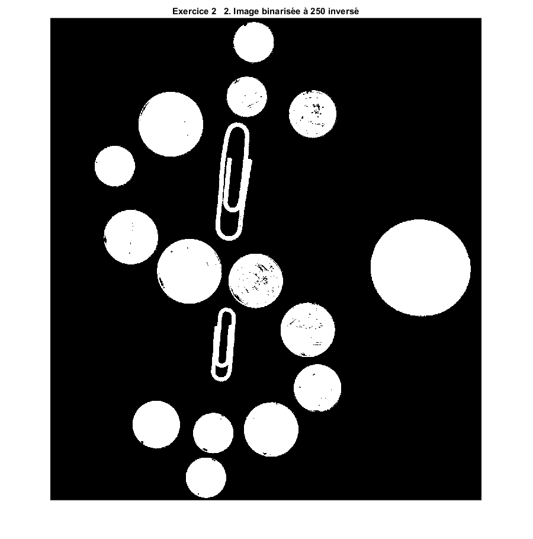
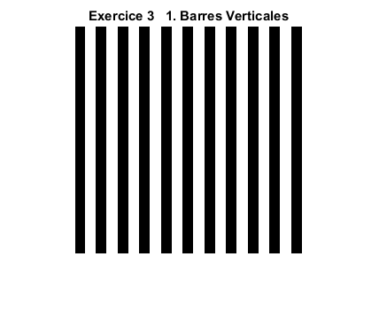
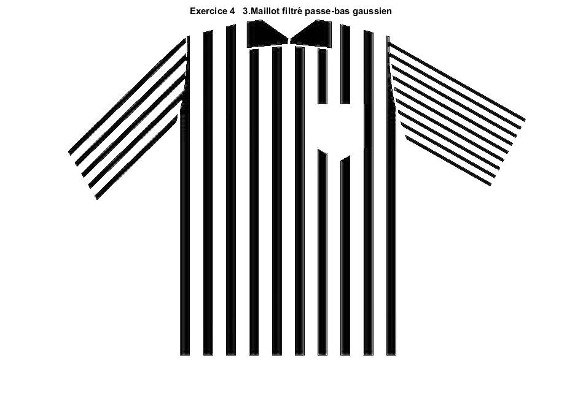

Contents
% Loïc LERAT 1920881 % Simon-Pierre DESJARDINS 1739351
Nettoyage du workspace
clear all; close all; clc;
Exercice I
Réhaussement d'images
image = imread('theArtist.png'); type Egalisation_Histogramme; imageEgalisee = uint8(Egalisation_Histogramme(image)); imshow(imageEgalisee); title("Exercice 1 1. Image égalisée"); %2-3. Convolution type Convolution.m; MasqueGau = 1/90 * [1,2,1,2,1;2,4,8,4,2;1,8,18,8,1;2,4,8,4,2;1,2,1,2,1]; imageConvo = uint8(Convolution(imageEgalisee,MasqueGau)); figure; imshow(imageConvo); title("Exercice 1 2-3. Image convoluée avec masque Gaussien"); %4. Rehaussement Contour figure; type Rehaussement_Contour.m; imageRehaussee = uint8(Rehaussement_Contour(imageConvo,1.2)); imshow(imageRehaussee); title("Exercice 1 4. Contours rehaussés"); %5. En rehaussant les contours, nous avons également rehaussé les %particules de bruits qui restaient à la suite du filtre Gaussien. Le %filtre médian permettrait de réduire le bruit impulsionnel de type "poivre %et sel" que nous observons tout en préservant les contours.
function [ image_egalise ] = Egalisation_Histogramme( image )
% Detailed explanation goes here
histo = imhist(image);
histoCum = cumsum(histo);
histoNormCum = histoCum/max(histoCum);
[m,n] = size(image);
image_egalise = zeros(m,n);
for i = 1:m
for j = 1:n
image_egalise(i,j) = histoNormCum(image(i,j)+1)*255;
end
end
end
function [ image_convolue ] = Convolution( image, masque )
% Detailed explanation goes here
[m,n] = size(image);
[k,p] = size(masque);
indexK = (k-1) /2;
indexP = (p-1) /2;
image_convolue = zeros(m,n);
padImage = padarray(image,[indexK,indexP],0,'both');
for i = 1:m
for j = 1:n
subMat = padImage(i:i+indexK*2,j:j+indexP*2);
resultMult = double(subMat) .* masque;
image_convolue(i,j) = sum(sum(resultMult));
end
end
end
function [ image_rehaussee ] = Rehaussement_Contour( image, K )
% Detailed explanation goes here
masqueGaussien = 1/16 * [1,2,1;2,4,2;1,2,1];
Ig = Convolution(image, masqueGaussien);
masqueLaplacien = [-1,-1,-1;-1,8,-1;-1,-1,-1];
ImgLapl = Convolution(Ig,masqueLaplacien);
%[m,n] = size(image);
%image_rehaussee = zeros(m,n);
image_rehaussee = Ig + K .* ImgLapl;
image_rehaussee(image_rehaussee<0) = 0;
end
Exercice II
Compteur de monnaie
%1. image = imread('pieces.jpg'); imageGris = rgb2gray( image ); imshow(imageGris); title("Exercice 2 1. Pièces niveaux de gris"); %2. type Binariser.m; figure; imageBinarisee = Binariser(imageGris,250,true); imshow(imageBinarisee); title("Exercice 2 2. Image binarisée à 250 inversé"); %3. se = strel('disk',10); closeImage = imclose(imageBinarisee,se); figure; imshow(closeImage); title("Exercice 2 3. Fermeture avec un disque de rayon 10 pixels"); %4 type Compter_Monnaie.m; monnaie = Compter_Monnaie(closeImage);
Warning: Image is too big to fit on screen; displaying at 33%
function [ imageBinariser ] = Binariser( image, seuil, modeInvert )
[m,n] = size(image);
imageBinariser = zeros(m,n);
if(modeInvert == true)
for i = 1:m
for j = 1:n
if(image(i,j) > seuil)
imageBinariser(i,j) = 0;
else
imageBinariser(i,j) = 255;
end
end
end
else
for i = 1:m
for j = 1:n
if(image(i,j) < seuil)
imageBinariser(i,j) = 0;
else
imageBinariser(i,j) = 255;
end
end
end
end
end
Warning: Image is too big to fit on screen; displaying at 33%
Warning: Image is too big to fit on screen; displaying at 33%
function [ sommeMonnaie ] = Compter_Monnaie( image )
se = strel('disk',90);
image90 = imerode(image,se);
[L,nombrePiece90] = bwlabel(image90);
se = strel('disk',110);
image110 = imerode(image,se);
[L,nombrePiece110] = bwlabel(image110);
se = strel('disk',120);
image120 = imerode(image,se);
[L,nombrePiece120] = bwlabel(image120);
se = strel('disk',140);
image140 = imerode(image,se);
[L,nombrePiece140] = bwlabel(image140);
se = strel('disk',200);
image200 = imerode(image,se);
[L,nombrePiece200] = bwlabel(image200);
somme10sous = (nombrePiece90 - nombrePiece110)*0.10;
somme5sous = (nombrePiece110 - nombrePiece120) * 0.05;
somme25sous = (nombrePiece120 - nombrePiece140) * 0.25;
somme2dollars = (nombrePiece140 - nombrePiece200) * 2;
sommeMonnaie = somme10sous + somme5sous + somme25sous + somme2dollars;
end
%10 5 25 2$
 Exercice III
Transformée de Fourier 2D
%1. imageVerticale = imread('Barres_Verticales.png'); imshow(imageVerticale); title("Exercice 3 1. Barres Verticales"); figure; imageHorizontale = imread('Barres_Horizontales.png'); imshow(imageHorizontale); title("Exercice 3 1. Barres Horizontales"); figure; imageOblique = imread('Barres_Obliques.png'); imshow(imageOblique); title("Exercice 3 1. Barres Obliques"); %2. VerticaleTFD = abs(fft2(imageVerticale)); VerticaleAfterLog = log(1+fftshift(VerticaleTFD/numel(VerticaleTFD))); figure; imshow(VerticaleAfterLog, []); title("Exercice 3 2. TFD Barres Verticales"); HorizonTFD = abs(fft2(imageHorizontale)); HorizonAfterLog = log(1+fftshift(HorizonTFD/numel(HorizonTFD))); figure; imshow(HorizonAfterLog, []); title("Exercice 3 2. TFD Barres Horizontales"); ObliqueTFD = abs(fft2(imageOblique)); ObliqueAfterLog = log(1+fftshift(ObliqueTFD/numel(ObliqueTFD))); figure; imshow(ObliqueAfterLog, []); title("Exercice 3 2. TFD Barres Obliques"); %3. imageVerticaleRotate = imrotate(imageVerticale,70,'bilinear','crop'); VerticaleRotateTFD = abs(fft2(imageVerticaleRotate)); VerticaleRotateAfterLog = log(1+fftshift(VerticaleRotateTFD/numel(VerticaleRotateTFD))); figure; imshow(VerticaleRotateAfterLog, []); title("Exercice 3 3. Rotation TFD Barres Verticales"); %4. %La transformée de Fourier 2D permet d'illustrer les intensités de l'image. %Le sens des spectres sont perpendiculaires aux lignes des images et ce %même après une rotation de 70 degrés de l'image. Cela démontre alors %qu'une rotation dans le domaine spatial provoque également une rotation %dans le domaine spectral.
Exercice IV
Filtrage spectral
%1. imageMaillot = imread('maillot.png'); imshow(imageMaillot); title("Exercice 4 1. Maillot original"); maillotTFD = fft2(imageMaillot); maillotTFDAfterShift = fftshift(maillotTFD/numel(maillotTFD)); figure; imshow(log(1+abs(maillotTFDAfterShift)),[]); title("Exercice 4 1.TFD Maillot original"); %2. figure; imshow(imread('ResultatTFDMaillot.png')); title("Exercice 4 2. Identification des textures"); %3. sizeMaillot = size(maillotTFDAfterShift); Pb = fspecial('gaussian',sizeMaillot,500); Pb = Pb/max(Pb(:)); maillotGaussianPb = maillotTFDAfterShift .* Pb; %figure; %imshow(log(1+abs(maillotGaussianPb))); %title("Exercice 4 3.TFD du maillot filtré passe-bas gaussien"); figure; IShiftMaillotPb = ifftshift(maillotGaussianPb); IFFTMaillotPb = ifft2(IShiftMaillotPb) * numel(IShiftMaillotPb); imshow(IFFTMaillotPb); title("Exercice 4 3.Maillot filtré passe-bas gaussien"); %4. Pb = fspecial('gaussian',sizeMaillot,4000); Pb = Pb/max(Pb(:)); Ph = 1 - Pb; maillotGaussian = maillotTFDAfterShift .* Ph; %figure; %imshow(log(1+abs(maillotGaussian))); %title("Exercice 4 4.TFD du maillot filtré passe-haut"); figure; IShiftMaillot = ifftshift(maillotGaussian); IFFTMaillot = ifft2(IShiftMaillot); imshow(abs(IFFTMaillot),[]); title("Exercice 4 4.Maillot filtré passe-haut"); %5 imwrite(maillotTFDAfterShift,'TFDMaillotMatLab.png'); TFDManche = imread('TFDMancheMatLab.png'); TFDManche = double(rgb2gray( TFDManche )); TFDManche = TFDManche/max(TFDManche(:)); figure; imshow(TFDManche,[]); title("Exercice 4 5.TFD manche du maillot(fait sous paint)"); idealMaillot = maillotTFDAfterShift .* TFDManche; IShiftManche = ifftshift(idealMaillot); IFFTManche = ifft2(IShiftManche); absoluManche = abs(IFFTManche); tempManche = absoluManche * (1/max(absoluManche(:))) *255; tempManche = Binariser(tempManche,50 ,false); figure; imshow(tempManche,[]); title("Exercice 4 5.Manches seulement"); %6 TFDTorse = imread('TFDMaillotMatLabSansTorse.png'); TFDTorse = double(rgb2gray( TFDTorse )); TFDTorse = TFDTorse/max(TFDTorse(:)); figure; imshow(TFDTorse,[]); title("Exercice 4 6.TFD du maillot sans torse(fait sous paint)"); idealMaillot = maillotTFDAfterShift .* TFDTorse; IShiftSansTorse = ifftshift(idealMaillot); IFFTSansTorse = ifft2(IShiftSansTorse); absoluSansTorse = abs(IFFTSansTorse); tempSansTorse = absoluSansTorse * (1/max(absoluSansTorse(:))) *255; tempSansTorse = Binariser(tempSansTorse,50 ,false); figure; imshow(tempSansTorse,[]); title("Exercice 4 6.Maillot sans torse"); %7 % Un filtre idéal risque de faire apparaître des artefacts dus aux % ondulations dans la transformée de fourier. La réponse fréquencielle d'un % filtre Butterworth est une gaussienne et permet donc d'éviter les % artefacts. Il est tout de même à noter que plus l'ordre du filtre % Butterworth augmente, plus on se rapproche du filtre idéal. %8 %Si l'on efface la composante moyenne de la TF, le fond blanc de l'image %(d'une fréquence proche de 0) devient noir. %9 % C'est un filtre passe-haut dont on fait baisser la fréquence de coupure